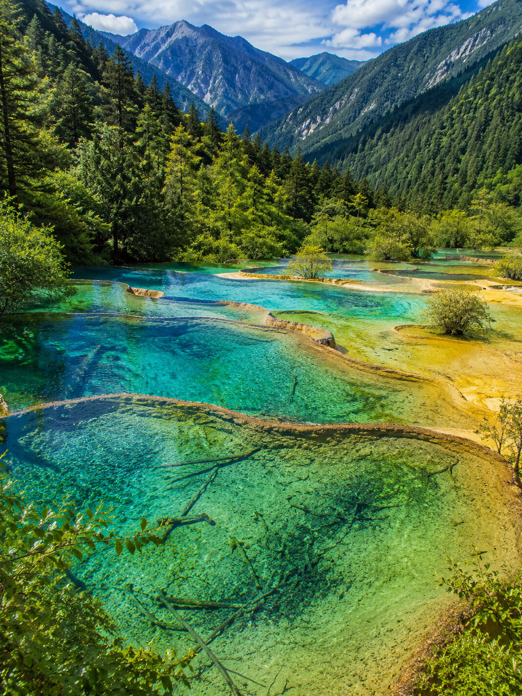

五彩钙华池，人间瑶池仙境。
黄龙风景名胜区位于四川省阿坝藏族羌族自治州松潘县境内，与九寨沟相邻，是中国唯一保护完好的高原湿地。黄龙以规模宏大、结构奇巧、色彩丰富的地表钙华景观闻名于世，1992年被列入世界自然遗产名录。长达数公里的钙华滩流，层层叠叠如梯田般的彩池群，在阳光下呈现出黄、绿、蓝、褐等多种色彩，宛如一条金色巨龙盘卧于雪山峡谷之间。

建议乘索道上山，从索道上站步行至五彩池（约40分钟），五彩池是黄龙的精华所在，海拔3900米处数百个彩池层层叠叠。之后沿栈道下行，依次经过黄龙中寺、争艳池、金沙铺地、洗身洞、迎宾池等景点，全程约4—5小时。下行路线均为木栈道，一路钙华景观尽收眼底。
1. 黄龙海拔较高（五彩池近3900米），注意预防高原反应，可提前备好氧气瓶。
2. 景区栈道较长，建议穿舒适防滑的徒步鞋。
3. 阳光强烈时彩池色彩最佳，阴雨天效果大打折扣，出行前关注天气。
4. 冬季（12月—次年3月）景区可能因大雪封山关闭，出行前务必查询开放信息。
九寨沟（车程约2.5小时）、松潘古城（车程约40分钟）、牟尼沟（车程约1小时）。黄龙与九寨沟相距不远，建议将两个世界遗产安排在同一行程中。